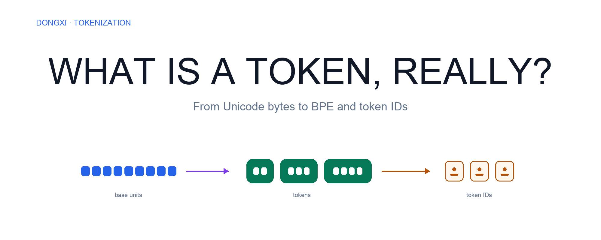
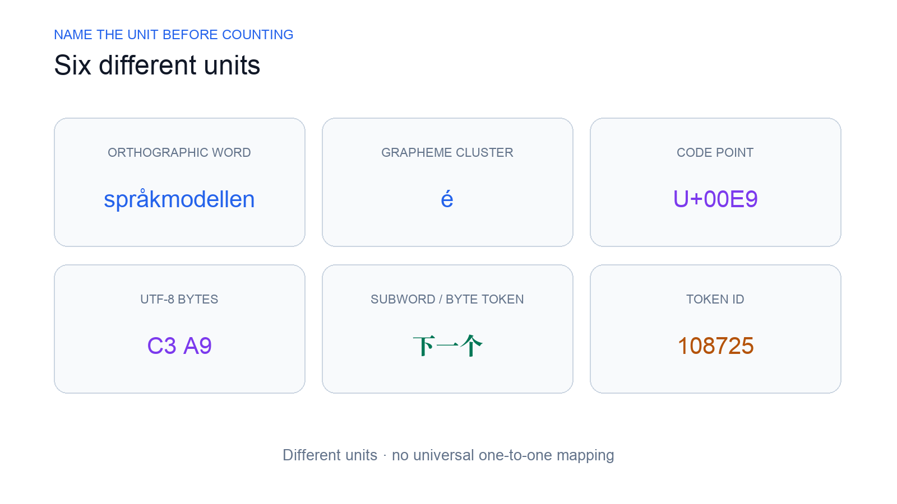
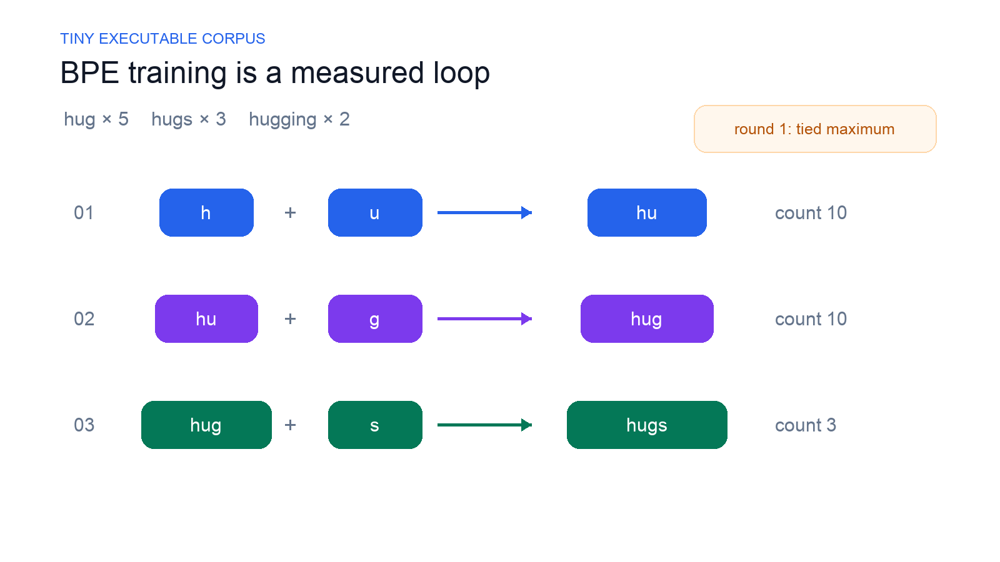
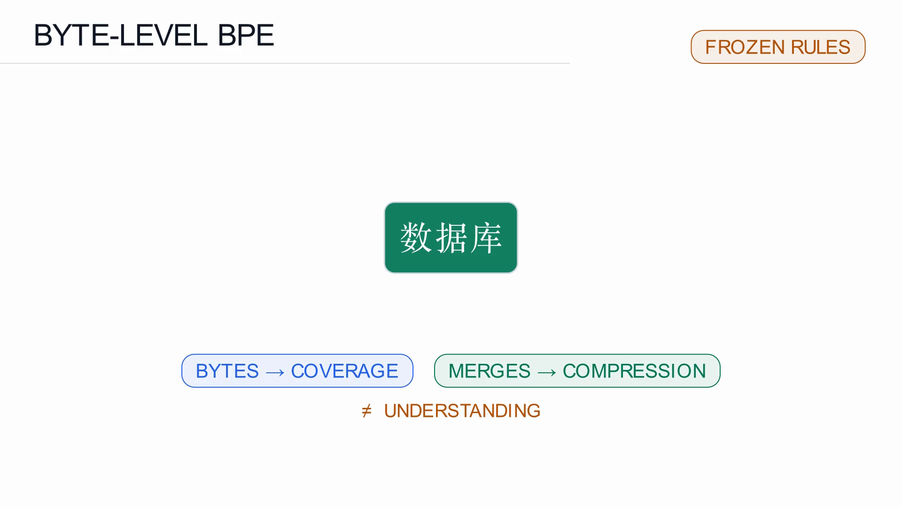
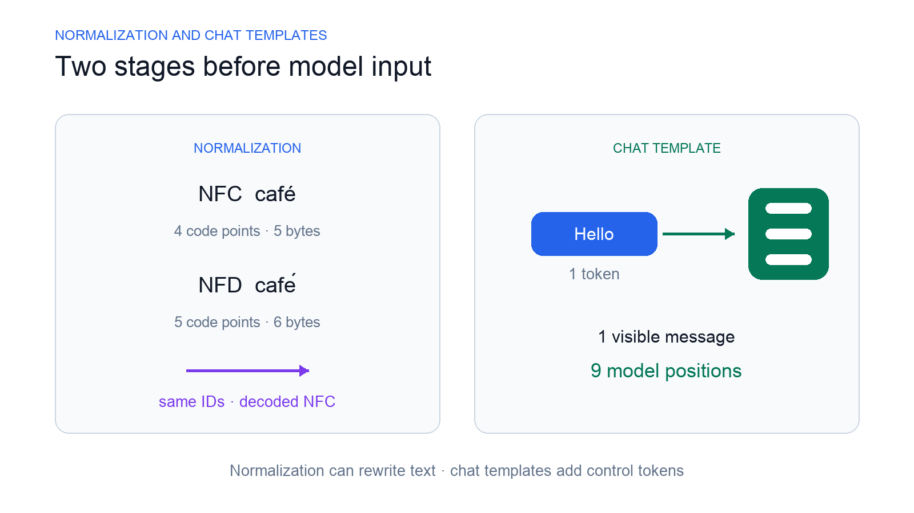
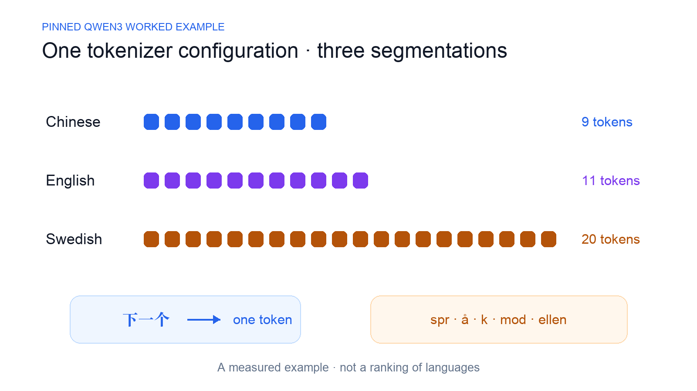

What Is a Token, Really? From Unicode Bytes to BPE and Token IDs
A token is one discrete unit produced by a tokenizer. Tokenization converts raw text into token IDs through normalization, pre-tokenization, a tokenization model such as BPE, and post-processing.
The same tokenizer represented the Chinese span 下一个 as one token, but split the single Swedish word språkmodellen into five.
That result came from a pinned Qwen3 tokenizer, not a linguistic rule. It exposes the most important fact about tokens: their boundaries and IDs depend on a particular vocabulary, tokenization model, and configuration.
To understand why, we need to follow text all the way from what a reader sees to the integers a model receives.
Six units hiding inside “text”
Consider the family emoji 👨👩👧👦. It looks like one symbol. Mechanically, it is one extended grapheme cluster, seven Unicode code points, and 25 UTF-8 bytes.
Now consider 数. It is one visible Chinese character and one code point, but UTF-8 stores it as three bytes: E6 95 B0.
And consider språkmodellen. It is one orthographic word, yet our pinned tokenizer represented it with five subword tokens.

The six units are:
- An orthographic word is a language-dependent written unit.
- A grapheme cluster is a reader-perceived character, possibly built from several code points.
- A Unicode code point is an integer assigned to an abstract character.
- A UTF-8 byte is part of one variable-length encoding of Unicode text.
- A subword or byte token is a discrete unit emitted by the tokenization model.
- A token ID is the integer vocabulary index assigned to that token.
None has a universal one-to-one relationship with another. That is why “How many tokens are in this sentence?” is incomplete unless we name the tokenizer, revision, and configuration.
The tokenizer defines the model's input representation
The model does not receive readable tokens such as token, 下一个, or spr. It receives IDs such as 3950 or 108725. Embedding lookup uses each ID to select a row from the input embedding matrix.
Suppose tokenizer A maps ID 42 to cat, while tokenizer B maps ID 42 to a Chinese token. IDs from A can still have the right shape for model B. Nothing has to crash. The model simply selects embedding rows under the wrong token-to-ID mapping.
The required correspondence is:
vocabulary token ↔ token ID ↔ row of the model's input embedding matrix
For ordinary text, the tokenization pipeline is:
raw text → normalization → pre-tokenization → BPE / WordPiece / Unigram → post-processing → token IDs
Chat models add an earlier serialization step:
messages → chat template serialization → formatted text and control tokens → tokenization → token IDs
Every stage can change the final token ID sequence.
BPE learns merges offline
Byte-pair encoding becomes clearer when training and use are separated.
During tokenizer training, BPE begins with base symbols, counts eligible adjacent pairs, selects a pair, adds the merged form, rewrites the corpus, and repeats under a finite vocabulary budget.
During runtime encoding, the tokenizer does not learn from your prompt. It applies its configured normalization and pre-tokenization, then uses the trained BPE merge ranks to produce tokens and map them to vocabulary IDs. Post-processing may add special tokens.
We made the training phase executable with a deliberately small weighted corpus:
hug × 5
hugs × 3
hugging × 2
The measured rounds were:
h + u → hu count 10
hu + g → hug count 10
hug + s → hugs count 3

The first round contains a subtlety: h+u and u+g both occur ten times. “Choose the most frequent pair” does not determine a unique merge. Our trainer declares a lexicographic tie rule and therefore chooses h+u.
After training, encoding with those merge ranks represents hugs as [hugs], but hugging as [hug] [g] [i] [n] [g]. The larger token appears only where its learned merge path applies. Encoding is not simply “choose the longest string present in a vocabulary.”
This trace demonstrates BPE mechanics. It does not reconstruct Qwen's historical tokenizer training.
Byte coverage is different from compression
Byte-level BPE starts with all 256 byte values. That gives it a powerful fallback: any valid UTF-8 text can be represented as byte tokens even when no larger token was learned for it.
For 数:
数 → E6 95 B0 → [E6] [95] [B0]
Repeated exposure can make the same input more compact. Ordered merges may combine bytes into a multi-byte token, then combine characters into multi-character tokens:
[E6] + [95] → [E6 95]
[E6 95] + [B0] → [数]
[数] + [据] → [数据]
[数据] + [库] → [数据库]

BPE does not know that 数据库 means “database.” It has learned that certain adjacent patterns were useful enough to receive vocabulary capacity.
Three claims must stay separate:
Base bytes provide coverage. Learned merges improve compression. Model training creates language capability.
An English-only byte tokenizer can preserve Chinese bytes without <unk> and still represent Chinese inefficiently. A model can receive those valid IDs and still understand very little Chinese.
Not every tokenizer has byte fallback. Byte-level BPE is also only one tokenization model. WordPiece learns a subword vocabulary with a different scoring procedure and commonly applies greedy token selection. Unigram begins with many candidate tokens, prunes the vocabulary, and scores alternative segmentations probabilistically. The tokenization model alone does not guarantee complete byte coverage.
Preprocessing can change “the same” text
Unicode allows visually equivalent text to have different underlying sequences.
NFC café uses one precomposed é: four code points and five UTF-8 bytes. NFD café uses e plus a combining accent: five code points and six bytes. Both have four grapheme clusters.
Under the pinned Qwen3 tokenizer, both forms mapped to the same two IDs: [924, 58858].
But only the NFC source decoded to exactly the same code-point sequence. The NFD source decoded as NFC. The strings remained canonically equivalent, but exact source equality failed. The returned offsets also stopped before the original combining mark.

This is not a tokenizer failure. It is a warning about what “round trip” means. Visual similarity, canonical equivalence, identical code points, identical token IDs, and identical decoded source are different properties.
Whitespace also affects pre-tokenization and vocabulary lookup. Under the same tokenizer:
token → ID 5839
token → ID 3950
Both inputs use one token. The leading space changes the selected vocabulary token and its token ID without changing token count.
Chat templates serialize messages into model input
Raw Hello was one token: ID 9707.
The same content rendered as one user message with a generation prompt became:
<|im_start|>user
Hello<|im_end|>
<|im_start|>assistant
That sequence occupied nine token positions.
The added positions came from template literals, role markers, line breaks, and control tokens. BPE did not learn new vocabulary from the message. In this tokenizer snapshot, <|im_end|> is the end-of-sequence token and <|endoftext|> is used for padding. Those special tokens have different functions even if both can appear near sequence boundaries.
This matters for context limits and cost estimates: the visible message is not the complete token ID sequence passed to the model.
A measured multilingual surprise
We encoded approximately equivalent Chinese, English, and Swedish sentences under the exact pinned Qwen/Qwen3-0.6B tokenizer revision, with added special tokens disabled.
Our prediction was Swedish first, then Chinese, then English. The measurement reversed it:
Chinese 9 tokens
English 11 tokens
Swedish 20 tokens

The Chinese segmentation contained multi-character tokens:
[小型] [语言] [模型] [学习] [预测] [下一个] [词] [元] [。]
The Swedish compound split internally:
[ spr] [å] [k] [mod] [ellen]
Orthographic word structure did not determine token efficiency. The learned vocabulary and merge ranks did.
The result does not prove that Chinese is generally more token-efficient than English or Swedish. It describes three fixed strings under one tokenizer revision. Language-level claims would require a fixed representative corpus, matched content, explicit sampling, domain coverage, and distributions rather than one sentence per language.
Even then, fewer tokens would measure compression or context occupancy—not comprehension, generation quality, or fairness.
What to record when token counts matter
For a reproducible tokenization result, record:
- the tokenizer repository and immutable revision;
- normalization and pre-tokenization behavior;
- whether special tokens were added;
- the exact chat template and generation-prompt policy;
- the input strings and denominator used for comparison;
- IDs, readable spans, and an exact encode/decode check.
The practical mental model is simple:
A token is a discrete unit produced by a specific tokenizer configuration. Its token ID is a vocabulary index used for embedding lookup—not a word, not a character, and not meaning itself.
Once those addresses enter the embedding table, a different question begins: how do shared vectors become context-dependent representations? That is the next layer of the model.
Reproducible sources
- Chapter 2: Text, Tokens, and Embeddings
- Transparent tokenizer-mechanics report
- Pinned Qwen3 multilingual tokenization report
- Tiny executable BPE trainer
- Hugging Face Tokenizers: The tokenization pipeline
- Hugging Face Transformers: Writing a chat template
- Unicode Standard Annex #29: Unicode Text Segmentation